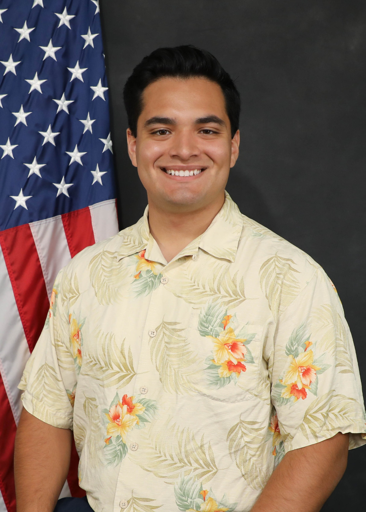
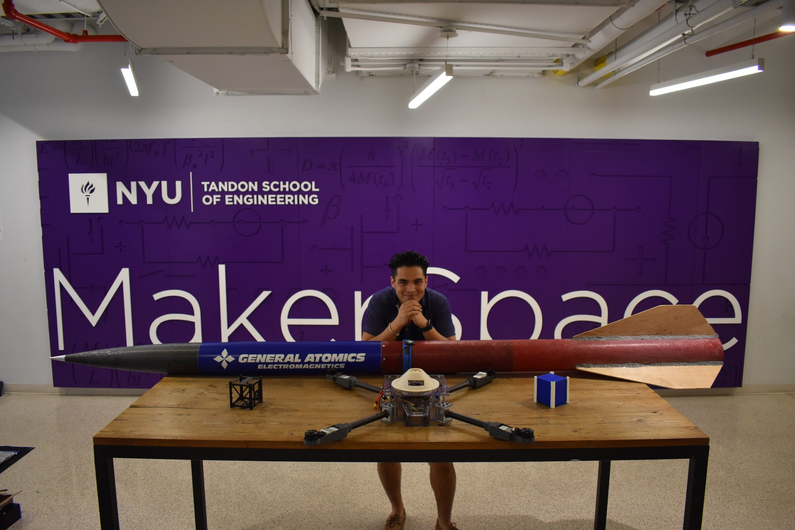

SEBAS Bipedal Robot
2025

Sebastian Abreu is a human with the ambitious goal of improving & inspiring humanity via space exploration. He is a graduate student at Columbia University pursuing his master’s degree in Mechanical Engineering. In 2022, he graduated from NYU Tandon School of Engineering with a Bachelor of Science in Mechanical Engineering and a minor in Aerospace Engineering. Here, you can find a catalog of his various projects along with accolades. When taking a break from creating in the lab, he enjoys playing soccer, spending time with family and watching live art performances to understand the other, non-STEM, side of human culture.


Photo Credit: Nicholas D’Alessandro